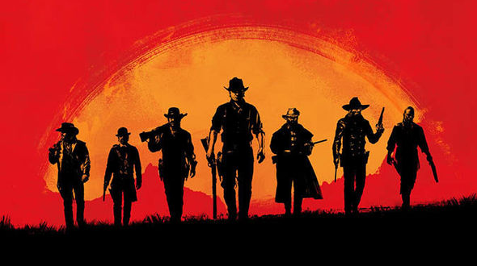

Civilization 6: Rise and Fall Makes it Fun to Fail
Sometimes, it's good to be bad...
By T.J. Hafer, Jan 22, 2018
It is a dark time for the Cree Nation. Having failed to achieve greatness during the Ancient Era, we enter the Classical not with dreams of grand temples and expanded borders, but with the grim knowledge that all we can do is gather around the hearth fire and ride out the coming storm.
I’ve long been critical of historical strategy games for encouraging the player down an unimpeded path of snowballing progress. That’s just not how history works. For every great Roman emperor, you get a handful of terrible ones. Every civilization that has experienced a golden age of knowledge and military supremacy has also faced crisis and collapse. The system of Dark Ages and Golden Ages in Rise and Fall seeks to introduce some of that into the Civ 6 experience. And I actually had the most fun while I was failing.
The main challenge of a Dark Age is that your cities will suffer from lower loyalty –- a new mechanic that can eventually cause them to secede and become Free Cities, representing small, non-expansionist minor powers. In my game as the Cree, my small, tight-knit empire didn’t face much in the way of loyalty problems. The system can almost be ignored on middle and lower difficulties if you’re playing tall instead of wide. But in another game as the Mongols, the frontier cities of my sprawling empire were often stricken by discontent. It was manageable in a normal age, but plunging into a Dark Age put the pressure on just enough to make me sweat.
My favorite part of Dark Ages, however, are Dark Age policies that can be slotted into your government, each offering something of a double-edged sword. You’re essentially making a choice to double down on preserving one aspect of your civilization while sacrificing something else. When I led the Cree into a Dark Age, I chose Isolationism. This gave me bonus food and production from domestic trade routes, but prevented me from training settlers or settling new cities. Each Dark Age policy really forces you to change how you play in a meaningful way. My main disappointments were that there weren’t enough of them, and they only came into play during a Dark Age.
Of the other new features, the one that makes the biggest impact is the Governor system. Governors are a set of seven, distinct characters you can hire and place in a city to help manage loyalty while providing themed bonuses from a skill tree as they level up. Moksha the Cardinal helped me spread my religion to the far corners of the world, while Magnus the Steward is great at getting the most out of industry and stripping the land of natural resources, if you like being a jerk to nature.
Red Dead Redemption 2 rumors hint at Battle Royale mode

An allegedly leaked document from Trusted Reviews suggests some interesting modes
By Jordan Crook, Feb 6, 2018
Red Dead Redemption 2 has been delayed more than once, with a current slated release for October 2018. That said, RDR2 fans are likely desperate for even the slightest whiff of the game, which is why an allegedly leaked document from Trusted Reviews couldn’t have come at a better time.....more >
Fortnite had 3.4M users on Sunday before it crashed, Epic says

The highest number of concurrent players ever led to some technical difficulties
By Charlie Hall, Feb 8, 2018
Epic Games says that Fortnite, the early access title that blends building with first- and third-person combat, hit a new high player count over the weekend ....more >